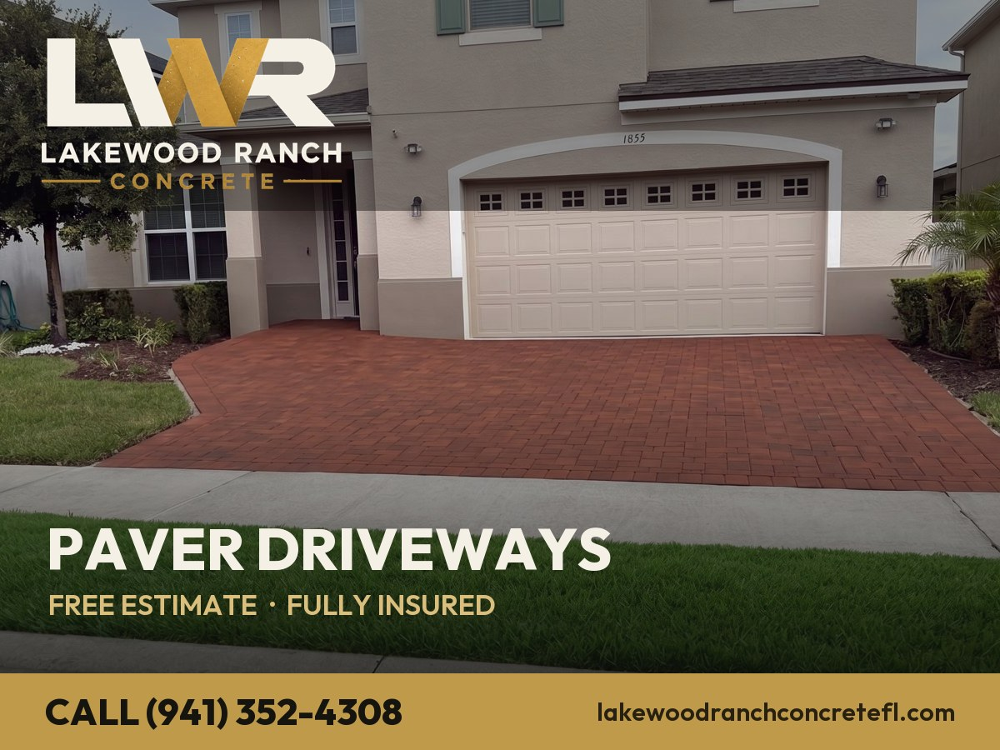
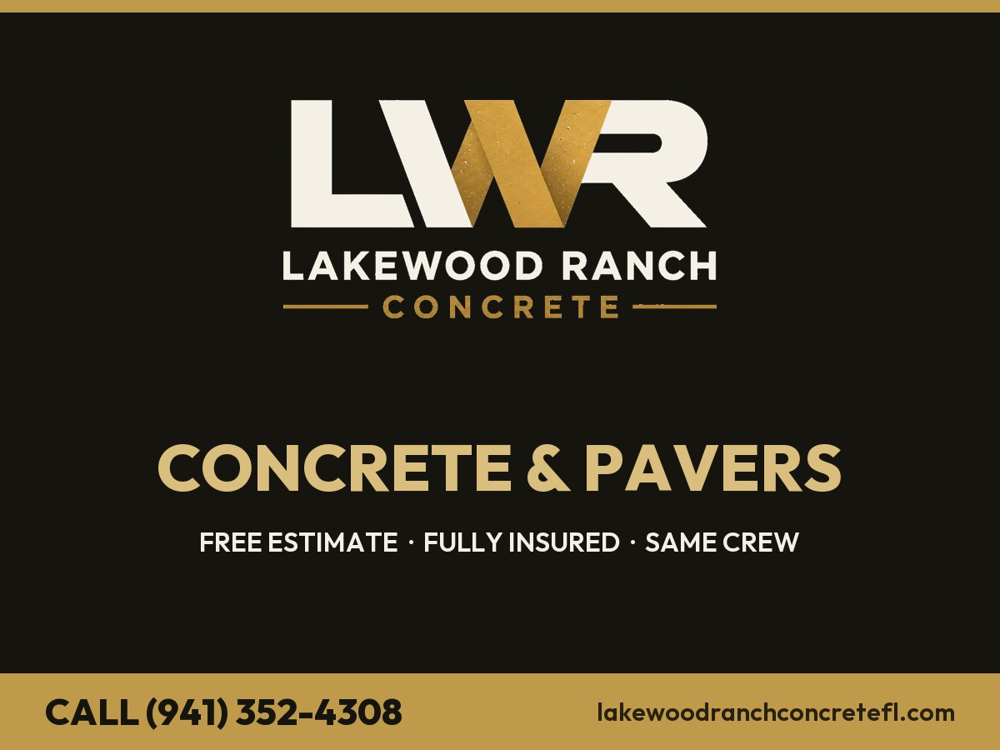
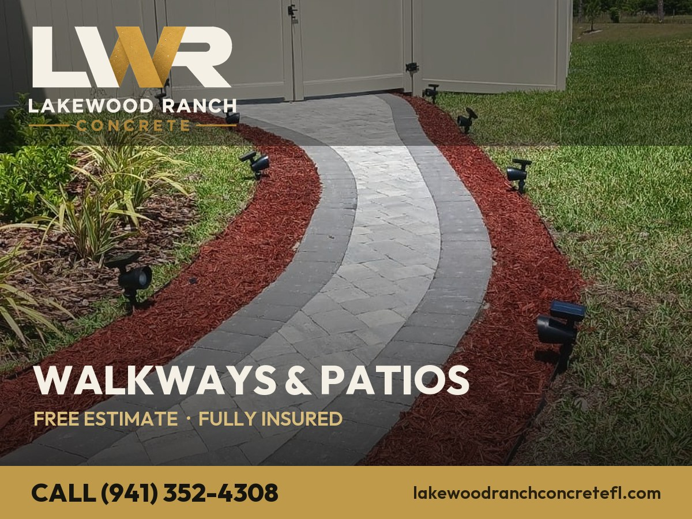

As 5 imagens (1200×900 · template do post)





Cada template tem logo + CTA + telefone embutidos. O calendário abaixo já indica qual imagem usar. Quando tiver fotos reais de concreto, me manda que troco o template 4.
Como automatizar (3x/semana no piloto automático)
- Metricool (grátis) — conecte o Google Business Profile → agende os 36 posts com imagem + texto + botão. Mais simples.
- HighLevel (você já tem) — Marketing → Social Planner → conecte o GBP → agende. Bônus: posta junto no Facebook/Instagram.
- Publer / Buffer — alternativas grátis que também postam no GBP.
Specs do Google Post: imagem 1200×900 (4:3), JPG. Botão sugerido em cada post. Poste Seg, Qua e Sex.
Calendário — 36 posts
| WEEK 1 | ||
| Monday Service Spotlight |
Concrete Driveways in Lakewood Ranch, FL. We install a poured concrete driveway engineered for Florida heat and shifting soil — by the same crew from start to finish. Fully insured, free written estimates across Manatee & Sarasota. Call or text (941) 352-4308.
Button: Learn more → https://lakewoodranchconcretefl.com/concrete-driveways/lakewood-ranch/ |
|
| Wednesday Free-Estimate Offer |
Get a FREE, written estimate on your concrete patios in Bradenton within 24 hours. No pressure, fully insured, and the same crew builds exactly what they quote. Call or text (941) 352-4308.
Button: Call now → tel:+19413524308 |
|
| Friday Tip / Educational |
|
Sarasota homeowners: most cracked concrete and settled pavers trace back to a rushed base. Our concrete pool decks in Sarasota start with excavation, clean fill and a compacted base — the prep that prevents the crack. Free estimate: (941) 352-4308.
Button: Learn more → https://lakewoodranchconcretefl.com/concrete-pool-decks/sarasota/ |
| WEEK 2 | ||
| Monday Recent Work |
Just finished a stamped concrete in Parrish, FL. Stamped concrete that reads like stone and clears HOA/ARC review — done right the first time. Want yours next? Free estimates, fully insured. (941) 352-4308.
Button: Learn more → https://lakewoodranchconcretefl.com/stamped-concrete/parrish/ |
|
| Wednesday Pavers vs Concrete |
Thinking about a concrete slabs for your Palmetto home? We install both concrete and pavers and help you pick what fits your budget, HOA and style. Free estimate in Palmetto: (941) 352-4308.
Button: Learn more → https://lakewoodranchconcretefl.com/concrete-slabs/palmetto/ |
|
| Friday Service Spotlight |
|
Concrete Resurfacing & Repair in Venice, FL. We install resurfacing that renews worn concrete without a full tear-out — by the same crew from start to finish. Fully insured, free written estimates across Manatee & Sarasota. Call or text (941) 352-4308.
Button: Learn more → https://lakewoodranchconcretefl.com/concrete-resurfacing/venice/ |
| WEEK 3 | ||
| Monday Free-Estimate Offer |
Get a FREE, written estimate on your paver driveways in Ellenton within 24 hours. No pressure, fully insured, and the same crew builds exactly what they quote. Call or text (941) 352-4308.
Button: Call now → tel:+19413524308 |
|
| Wednesday Tip / Educational |
|
North Port homeowners: most cracked concrete and settled pavers trace back to a rushed base. Our paver patios in North Port start with excavation, clean fill and a compacted base — the prep that prevents the crack. Free estimate: (941) 352-4308.
Button: Learn more → https://lakewoodranchconcretefl.com/paver-patios-walkways/north-port/ |
| Friday Recent Work |
|
Just finished a pool deck pavers in Riverview, FL. A travertine or paver pool deck, cool underfoot and sealed — done right the first time. Want yours next? Free estimates, fully insured. (941) 352-4308.
Button: Learn more → https://lakewoodranchconcretefl.com/pool-deck-pavers/riverview/ |
| WEEK 4 | ||
| Monday Pavers vs Concrete |
|
Thinking about a paver sealing for your Sun City Center home? We install both concrete and pavers and help you pick what fits your budget, HOA and style. Free estimate in Sun City Center: (941) 352-4308.
Button: Learn more → https://lakewoodranchconcretefl.com/paver-sealing/sun-city-center/ |
| Wednesday Service Spotlight |
Concrete Driveways in Tampa, FL. We install a poured concrete driveway engineered for Florida heat and shifting soil — by the same crew from start to finish. Fully insured, free written estimates across Manatee & Sarasota. Call or text (941) 352-4308.
Button: Learn more → https://lakewoodranchconcretefl.com/concrete-driveways/tampa/ |
|
| Friday Free-Estimate Offer |
Get a FREE, written estimate on your concrete patios in Brandon within 24 hours. No pressure, fully insured, and the same crew builds exactly what they quote. Call or text (941) 352-4308.
Button: Call now → tel:+19413524308 |
|
| WEEK 5 | ||
| Monday Tip / Educational |
|
Lakewood Ranch homeowners: most cracked concrete and settled pavers trace back to a rushed base. Our concrete pool decks in Lakewood Ranch start with excavation, clean fill and a compacted base — the prep that prevents the crack. Free estimate: (941) 352-4308.
Button: Learn more → https://lakewoodranchconcretefl.com/concrete-pool-decks/lakewood-ranch/ |
| Wednesday Recent Work |
Just finished a stamped concrete in Bradenton, FL. Stamped concrete that reads like stone and clears HOA/ARC review — done right the first time. Want yours next? Free estimates, fully insured. (941) 352-4308.
Button: Learn more → https://lakewoodranchconcretefl.com/stamped-concrete/bradenton/ |
|
| Friday Pavers vs Concrete |
Thinking about a concrete slabs for your Sarasota home? We install both concrete and pavers and help you pick what fits your budget, HOA and style. Free estimate in Sarasota: (941) 352-4308.
Button: Learn more → https://lakewoodranchconcretefl.com/concrete-slabs/sarasota/ |
|
| WEEK 6 | ||
| Monday Service Spotlight |
|
Concrete Resurfacing & Repair in Parrish, FL. We install resurfacing that renews worn concrete without a full tear-out — by the same crew from start to finish. Fully insured, free written estimates across Manatee & Sarasota. Call or text (941) 352-4308.
Button: Learn more → https://lakewoodranchconcretefl.com/concrete-resurfacing/parrish/ |
| Wednesday Free-Estimate Offer |
Get a FREE, written estimate on your paver driveways in Palmetto within 24 hours. No pressure, fully insured, and the same crew builds exactly what they quote. Call or text (941) 352-4308.
Button: Call now → tel:+19413524308 |
|
| Friday Tip / Educational |
|
Venice homeowners: most cracked concrete and settled pavers trace back to a rushed base. Our paver patios in Venice start with excavation, clean fill and a compacted base — the prep that prevents the crack. Free estimate: (941) 352-4308.
Button: Learn more → https://lakewoodranchconcretefl.com/paver-patios-walkways/venice/ |
| WEEK 7 | ||
| Monday Recent Work |
|
Just finished a pool deck pavers in Ellenton, FL. A travertine or paver pool deck, cool underfoot and sealed — done right the first time. Want yours next? Free estimates, fully insured. (941) 352-4308.
Button: Learn more → https://lakewoodranchconcretefl.com/pool-deck-pavers/ellenton/ |
| Wednesday Pavers vs Concrete |
|
Thinking about a paver sealing for your North Port home? We install both concrete and pavers and help you pick what fits your budget, HOA and style. Free estimate in North Port: (941) 352-4308.
Button: Learn more → https://lakewoodranchconcretefl.com/paver-sealing/north-port/ |
| Friday Service Spotlight |
Concrete Driveways in Riverview, FL. We install a poured concrete driveway engineered for Florida heat and shifting soil — by the same crew from start to finish. Fully insured, free written estimates across Manatee & Sarasota. Call or text (941) 352-4308.
Button: Learn more → https://lakewoodranchconcretefl.com/concrete-driveways/riverview/ |
|
| WEEK 8 | ||
| Monday Free-Estimate Offer |
Get a FREE, written estimate on your concrete patios in Sun City Center within 24 hours. No pressure, fully insured, and the same crew builds exactly what they quote. Call or text (941) 352-4308.
Button: Call now → tel:+19413524308 |
|
| Wednesday Tip / Educational |
|
Tampa homeowners: most cracked concrete and settled pavers trace back to a rushed base. Our concrete pool decks in Tampa start with excavation, clean fill and a compacted base — the prep that prevents the crack. Free estimate: (941) 352-4308.
Button: Learn more → https://lakewoodranchconcretefl.com/concrete-pool-decks/tampa/ |
| Friday Recent Work |
Just finished a stamped concrete in Brandon, FL. Stamped concrete that reads like stone and clears HOA/ARC review — done right the first time. Want yours next? Free estimates, fully insured. (941) 352-4308.
Button: Learn more → https://lakewoodranchconcretefl.com/stamped-concrete/brandon/ |
|
| WEEK 9 | ||
| Monday Pavers vs Concrete |
Thinking about a concrete slabs for your Lakewood Ranch home? We install both concrete and pavers and help you pick what fits your budget, HOA and style. Free estimate in Lakewood Ranch: (941) 352-4308.
Button: Learn more → https://lakewoodranchconcretefl.com/concrete-slabs/lakewood-ranch/ |
|
| Wednesday Service Spotlight |
|
Concrete Resurfacing & Repair in Bradenton, FL. We install resurfacing that renews worn concrete without a full tear-out — by the same crew from start to finish. Fully insured, free written estimates across Manatee & Sarasota. Call or text (941) 352-4308.
Button: Learn more → https://lakewoodranchconcretefl.com/concrete-resurfacing/bradenton/ |
| Friday Free-Estimate Offer |
Get a FREE, written estimate on your paver driveways in Sarasota within 24 hours. No pressure, fully insured, and the same crew builds exactly what they quote. Call or text (941) 352-4308.
Button: Call now → tel:+19413524308 |
|
| WEEK 10 | ||
| Monday Tip / Educational |
|
Parrish homeowners: most cracked concrete and settled pavers trace back to a rushed base. Our paver patios in Parrish start with excavation, clean fill and a compacted base — the prep that prevents the crack. Free estimate: (941) 352-4308.
Button: Learn more → https://lakewoodranchconcretefl.com/paver-patios-walkways/parrish/ |
| Wednesday Recent Work |
|
Just finished a pool deck pavers in Palmetto, FL. A travertine or paver pool deck, cool underfoot and sealed — done right the first time. Want yours next? Free estimates, fully insured. (941) 352-4308.
Button: Learn more → https://lakewoodranchconcretefl.com/pool-deck-pavers/palmetto/ |
| Friday Pavers vs Concrete |
|
Thinking about a paver sealing for your Venice home? We install both concrete and pavers and help you pick what fits your budget, HOA and style. Free estimate in Venice: (941) 352-4308.
Button: Learn more → https://lakewoodranchconcretefl.com/paver-sealing/venice/ |
| WEEK 11 | ||
| Monday Service Spotlight |
Concrete Driveways in Ellenton, FL. We install a poured concrete driveway engineered for Florida heat and shifting soil — by the same crew from start to finish. Fully insured, free written estimates across Manatee & Sarasota. Call or text (941) 352-4308.
Button: Learn more → https://lakewoodranchconcretefl.com/concrete-driveways/ellenton/ |
|
| Wednesday Free-Estimate Offer |
Get a FREE, written estimate on your concrete patios in North Port within 24 hours. No pressure, fully insured, and the same crew builds exactly what they quote. Call or text (941) 352-4308.
Button: Call now → tel:+19413524308 |
|
| Friday Tip / Educational |
|
Riverview homeowners: most cracked concrete and settled pavers trace back to a rushed base. Our concrete pool decks in Riverview start with excavation, clean fill and a compacted base — the prep that prevents the crack. Free estimate: (941) 352-4308.
Button: Learn more → https://lakewoodranchconcretefl.com/concrete-pool-decks/riverview/ |
| WEEK 12 | ||
| Monday Recent Work |
Just finished a stamped concrete in Sun City Center, FL. Stamped concrete that reads like stone and clears HOA/ARC review — done right the first time. Want yours next? Free estimates, fully insured. (941) 352-4308.
Button: Learn more → https://lakewoodranchconcretefl.com/stamped-concrete/sun-city-center/ |
|
| Wednesday Pavers vs Concrete |
Thinking about a concrete slabs for your Tampa home? We install both concrete and pavers and help you pick what fits your budget, HOA and style. Free estimate in Tampa: (941) 352-4308.
Button: Learn more → https://lakewoodranchconcretefl.com/concrete-slabs/tampa/ |
|
| Friday Service Spotlight |
|
Concrete Resurfacing & Repair in Brandon, FL. We install resurfacing that renews worn concrete without a full tear-out — by the same crew from start to finish. Fully insured, free written estimates across Manatee & Sarasota. Call or text (941) 352-4308.
Button: Learn more → https://lakewoodranchconcretefl.com/concrete-resurfacing/brandon/ |